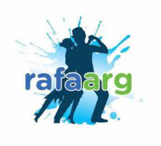

EXPERIENCIA PROFESIONAL:
CNH Industrial
Periodo: 11-2022 / actualmente
ICT
Logro: aprendizaje de SQL, Python, SAP (MM lo básico), EMP (Enviar coreo automático), Excel, testing, documentación, videos
Gimnasio La Chimenea
Periodo: 11-2018 / 08-2019
Recepción – Atención al Público. Control de ingreso y cobro de las actividades
Logro: Mi primer empleo.
PRACTICAS PRE-PROFESIONAL:
Oyente de taller y actividad física
ALCO
2021
Oyente tratamiento de paciente en grupo terapéutico

Clínica DR. COMILLOT.
2021
Asesoramiento alimentario
YMCA
2021
Taller de alimentación
YMCA
2021
Investigación sobre el COVID 19 secuela

Universidad ISALUD.
2021
Pausa activa:
RAFA ARGENTINA Y YMCA
2021
Flayers y video:
RAFA ARGENTINA, ISALUD Y YMCA
2021
OTRAS EXPERIENCIAS:
Juegos Olímpicos de la Juventud

Buenos Aires 2018 Periodo 10-2018
Rubro: Deporte
Posición: Operaciones, Atención al Público.
Principales tareas: control ingreso, controlar tribunas.